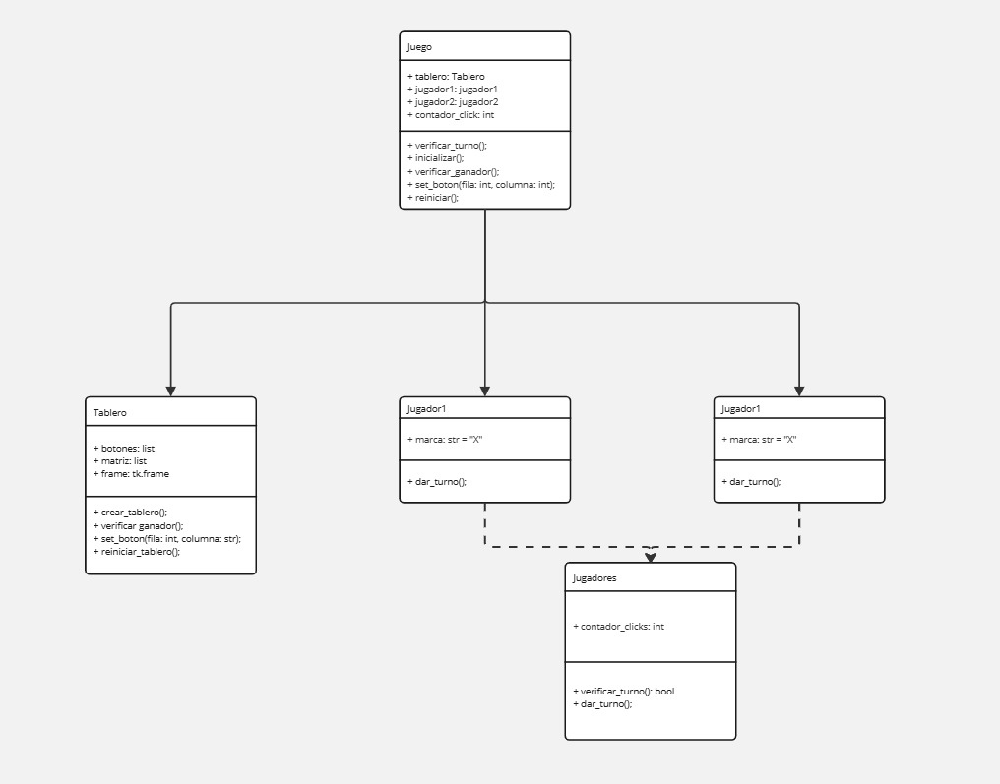

Descripción del juego
El tic-tac-toe, también conocido como "tres en raya" o "gato", es un juego de lápiz y papel sencillo pero estratégico para dos jugadores. Se juega en una cuadrícula de 3x3, donde cada jugador elige un símbolo, generalmente "X" u "O".
Implementación en Python
Diagrama de clases UML:
Estructura del Código
El código está organizado en tres clases principales:
Juego: Gestiona el flujo general del juego, incluyendo la inicialización, el control de turnos, la verificación de ganadores y el reinicio.Tablero: Representa el tablero de juego, maneja la creación de los botones, la asignación de marcas y la verificación de ganadores.Jugadores(y sus subclasesJugador1yJugador2): Representan a los jugadores, cada uno con su marca ("X" u "O").
Lógica del Juego
Juego.inicializar(): Crea el tablero gráfico llamando aTablero.crear_tablero().- El usuario hace clic en un botón del tablero.
Juego.set_boton():- Determina el jugador actual usando
Juego.verificar_turno(). - Coloca la marca del jugador en el tablero (
Tablero.set_boton()). - Incrementa el contador de clics.
- Verifica si hay un ganador o un empate (
Juego.verificar_ganador()). - Pasa el turno al siguiente jugador.
- Determina el jugador actual usando
- Si hay un ganador o un empate:
- Se muestra un mensaje emergente.
- Se reinicia el juego (
Juego.reiniciar()).
- El juego continúa hasta que haya un ganador o un empate.
Consideraciones Adicionales
- El diagrama UML (imagen adjunta) proporciona una representación visual de la estructura de clases y sus relaciones.
- La clase
Jugadoreses una clase base que proporciona funcionalidad común a ambos jugadores. - El juego utiliza la biblioteca
tkinterpara crear la interfaz gráfica de usuario.